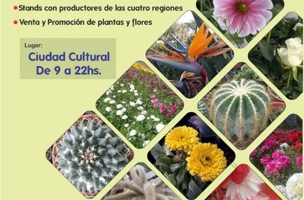
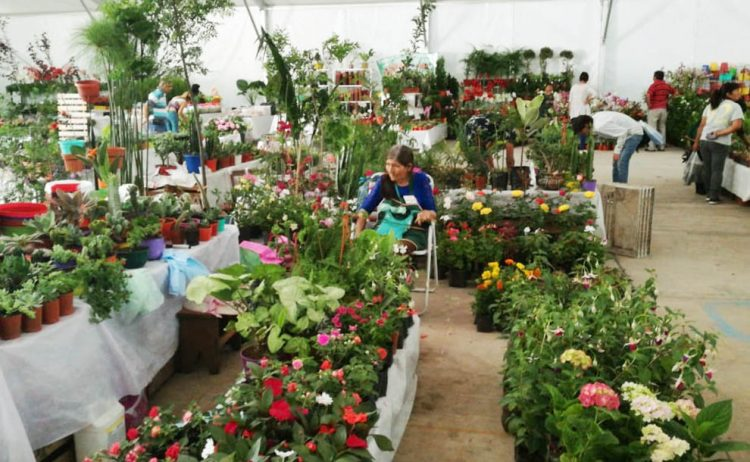

Gran Feria de Plantas
Juntos, potenciamos el comercio jujeño

Apertura del Paseo de las Flores y Plantas de la region
“Jujuy en Flor 2022” convoca a productores de toda la provincia, los cuales durante 3 días darán a conocer la actividad florícola e incentivar el consumo de plantas y flores durante todo el año. Durante las jornadas se podrán acceder a diferentes charlas teóricas y prácticas vinculadas a la floricultura, además de poder disfrutar de patio de comidas y veladas artísticas.
Nuevamente y organizada de manera conjunta entre el Gobierno de la Provincia, y la Asociación de Productores de Plantas Ornamentales de Jujuy (Appojuy), la Fiesta Provincial de la Floricultura “Jujuy en Flor 2022”, se desarrollará el viernes sábado y domingo de 9 a 22 en Ciudad Cultural.
La Asociación de Productores de Plantas Ornamentales de Jujuy (APPOJUY) está compuesta por 50 familias jujeñas que trabajan mancomunadamente para el desarrollo de la Industria Florícola.
